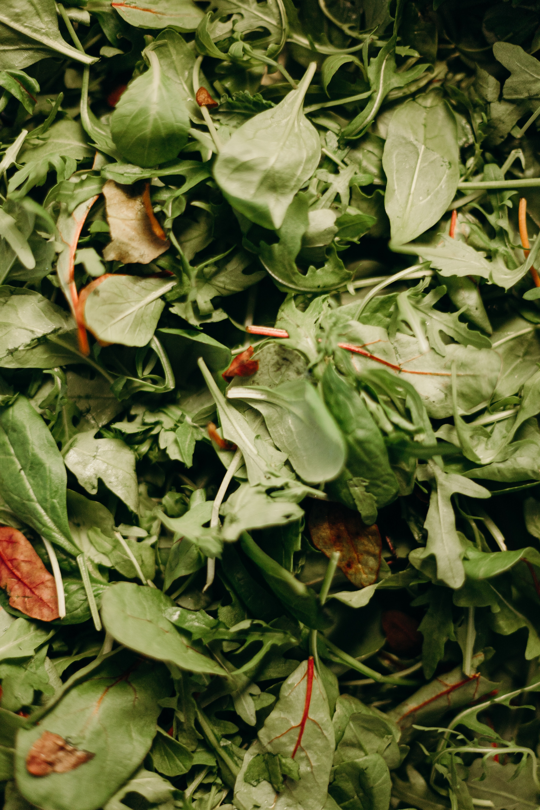
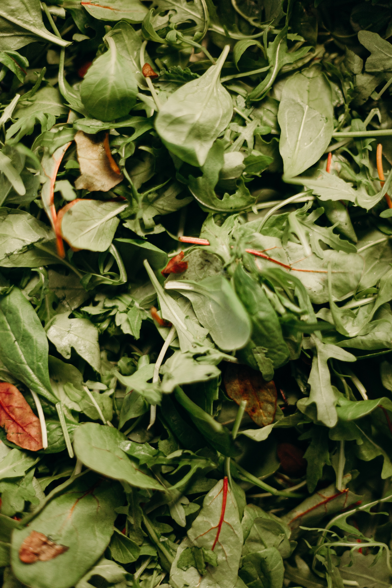

हिरव्या भाज्या
1.पालक
 

पूर्व-कापणी
माती आणि हवामान:
चांगल्या प्रजनन आणि ड्रेनेज असलेल्या कोणत्याही प्रकारच्या जमिनीवर पालक पिकविला जाऊ शकतो परंतु वाळूची लोम माती सर्वात योग्य आहे. मातीचा पीएच ६.५-७ असावा. पालक हे हिवाळी हंगामातील पीक असले तरी ते सौम्य तापमानाच्या परिस्थितीत वर्षभर वाढवता येते
लागवड- पेरणीची वेळ:मैदानी भागात पेरणीचा मुख्य हंगाम ऑगस्टच्या शेवटच्या आठवड्यापासून नोव्हेंबरच्या दुसर् या आठवड्यात आहे. डोंगराळ प्रदेशात मार्च-मे पासून त्याची पेरणी केली जाते.
पेरणीचे प्रमाण:हिवाळी पिकासाठी 10-15 किलो बियाणे/हा वापरा आणि उन्हाळी पिकासाठी 25-30 किलो/हा बियाणे आवश्यक आहे. (बियाणे आणि रोपे या दोन्हीपासून पिकवले जाऊ शकते)
रोपण अंतर : ५ बाय २० सेंमी
अन्न सूत्रे:माती तयार करण्याच्या वेळी हेक्टरी २५ टन फार्मयार्ड खत लागू करा. एनपीकेच्या नैसर्गिक स्त्रोतासह
देखभाल:
पीक स्वच्छ आणि निरोगी ठेवण्यासाठी एक किंवा दोन तण दिले पाहिजेत.
वॉटर मॅनेजमेंट:
वाढत्या हंगामात माती सातत्याने ओलसर ठेवा. पेरणीनंतर लगेचच पहिला सिंचन लागू करा. त्यानंतरचे सिंचन उन्हाळ्यात ४-६ दिवस आणि हिवाळ्यात १०-१२ दिवसांच्या अंतराने दिले जाऊ शकते.
कम्पेनियन : बीन्स, गाजर, कोबी, मटार, फुलकोबी
प्लांट रोटेशन : टोमॅटो, भेंडी, कंपनी, सर्व फळे
यील्ड:
६-८ आठवड्यांच्या लागवडीनंतर पीक कापणी सुरू करा. ३-४ इंच लांब असलेली बाह्य पाने कापून टाका. हे अधिक वनस्पती वाढीस प्रोत्साहित करेल आणि शेवटी कापणीसाठी अधिक पर्णपर्णी होईल. हिरव्या पानांचे एकूण उत्पन्न हेक्टरी ८०-१०० क्विंटल आहे.
इंटिग्रेटेड पेस्ट अँड डिसीज मॅनेजमेंट/कॉमन इश्यूज:
फ्ली बीटल, कोळ्याचे कण, स्लग आणि एफिड ्स हे प्रमुख कीटक आहेत. दोन सर्वात सामान्य आजार म्हणजे डाऊनी मिल्डे (जे थंड, ओलसर हवामानात दिसू शकतात) आणि पांढरा गंज. लागवडीपूर्वी लगेचच नोंदणीकृत रसायनाने बियाण्यांवर उपचार करणे: प्रतिरोधक पंथीवार लावून; मातीचे तापमान जास्त असताना लागवड टाळणे; 3 वर्षांच्या पिकांच्या आवर्तनाचा सराव करणे; आणि बियाण्यावरील गरम पाण्याच्या उपचारांचा विचार केला तर ते नियंत्रित करू शकतात.
कापणीनंतर
कापणी केलेले पीक लवकरात लवकर थंड होऊ दिले जाते. पालक 0°से. तापमानावर 10 ते 14 दिवस आणि 95% ते 100% सापेक्ष आर्द्रता आयोजित केला जाऊ शकतो.
२. मेथी
पूर्व-कापणी
माती आणि हवामान :
फेनुग्रीक ची लागवड समृद्ध सेंद्रिय पदार्थअसलेल्या विविध प्रकारच्या जमिनीत केली जाऊ शकते, तथापि चांगल्या ड्रेनेजसह घृणास्पद माती मेथीलागवडीसाठी सर्वोत्तम आहे. ६.० ते ७.० पीएच मूल्य असलेली माती लागवडीसाठी इष्टतम आहे. थंड आणि कोरडे हवामान आवश्यक आहे.
लागवड-
पेरणीची वेळ:खारिफ : जून-जुलै, रब्बी : ऑक्टोबर नोव्हेंबर
पेरणी दर : १२ किलो/हा
रोपण अंतर : २० बाय १५ सेंमी
फूड फॉर्म्युलेशन्स:: शेवटच्या नांगरणीपूर्वी एफवायएमचे 20-25 टी/हा घाला. एन.पी.के. खताचा डोस 30:25:40 @of लावा.
मेंटेनन्स:बीडिंग बियापेरल्यानंतर २० ते २५ दिवसांनी केले जाते. आवश्यक ते वआवश्यक ते वीडिंग केले जाते.
जल व्यवस्थापन : पेरणीनंतर लगेचच प्रथम सिंचन दिले जाते आणि त्यानंतर ७-१० दिवसांच्या अंतराने.
कम्पेनियन: काकडी, बीन्स, लेट्युस.
प्लांट रोटेशन: टोमॅटो, बटाट्यानंतर प्लांट.
यील्ड : ५००-७०० किलो/हा बियाणे.
कापणीनंतर
कापणी केलेली मेथी आवश्यक रकमेच्या बंडलमध्ये बांधली पाहिजे. ते ५-७ दिवस उन्हात वाळवता येतात. वनस्पतीपासून बियाणे वेगळे करण्यासाठी यांत्रिक किंवा मॅन्युअल थ्रेसिंग केले जाते.
३.कोथिंबीर
पूर्व-कापणी
माती आणि हवामान: कोथिंबीरला इष्टतम वाढीसाठी किमान 6 तास थेट सूर्यप्रकाश - शक्यतो 8 किंवा त्यापेक्षा जास्त - आवश्यक आहे. विहिरीचे निथळलेले गाळ किंवा लोममाती लागवडीसाठी योग्य असून पीएच ६ ८ असावा. थंड आणि तुलनेने कोरडे, तुषारमुक्त हवामान
लागवड: सेंद्रिय कोथिंबीर, रोटोटिल किंवा कुदळ सह 2 किंवा 3 इंच कंपोस्ट केलेले सेंद्रिय पदार्थ किंवा खत आपल्या बागेच्या मातीच्या पहिल्या 6 इंचात सर्वोत्तम परिणामांसाठी.
पेरणीची वेळ : जून जुलै आणि ऑक्टोबर नोव्हेंबर
बियाणे: कोथिंबीर बियाणे उगवणार नाही आणि म्हणूनच पेरणीपूर्वी बियाणे अर्ध्या भागात उघडले जातात.
पेरणी दर : बियाणे दर पावसाच्या आहारातील पिकांच्या परिस्थितीत सुमारे २०-२५ किलो/हा आणि सिंचित पिकांच्या परिस्थितीत १०-१२ किलो/हा आहे
रोपण अंतर: २० बाय १५ सेंमी.
अंतराने विभाजित बिया पेराफूड फॉर्म्युलेशन्स : सिंचित पिकासाठी पेरणी नंतर १ महिन्यानंतर १० किलो एन/हा वर ड्रेसिंग केले पाहिजे. पाऊस फेडलेल्या आणि सिंचित पिकांसाठी ४० पी १० किलो एन आणि २० किलो के घाला. शेवटच्या नांगरणीपूर्वी एफवायएम 10 टी/हा घाला
मेंटेनन्स:२ ते ५ इंच मल्च घातल्यास तण खाली राहील, आर्द्रता येईल आणि सामान्यत: आनंदी कोथिंबीर वनस्पती तयार होतील. पेरणीनंतर ३० दिवसांनी पातळ करणे केले जाते. त्यानंतर चे तण आवश्यक ते आणि आवश्यक ते केले जाते. प्रत्येक टेकडीवर 2 वनस्पती सोडा.
जल व्यवस्थापन : पेरणीनंतर लगेचच प्रथम आणि दुसऱ्या दिवशी तिसऱ्या दिवशी व त्यानंतरच्या सिंचनात ७-१० दिवसांच्या अंतराने सिंचन करावे.
कम्पेनियन:बटाटे, गाजर, कोबी
प्लांट रोटेशन: काकडी, टोमॅटो नंतर आणि बीन्सच्या आधी प्लांट, वाटाणा.
यील्ड:५००-८०० किलो/हा
एकात्मिक कीटक आणि रोग व्यवस्थापन:
पावडरी मिल्डेव
स्प्रे कडुम सीड कील अर्क 5% तीन%
सीडवर स्यूडोमोनास फ्लोरेसेन्स 10 ग्रॅम/किलो बियाणे उपचार केले पाहिजेत
विलट्स
सीडवर स्यूडोमोनास फ्लोरेसेन्स 10 ग्रॅम/किलो बियाणे आणि त्यानंतर मातीचा वापर @5 किलो/हा.
कापणीनंतर
झाडे कापली जातात किंवा खेचली जातात आणि शेतातील छोट्या स्टॅकमध्ये साचलेली असतात. ताजी कोथिंबीर सावलीत वाळवावी. काठीने मारहाण करून आणि विनोइंग करून बियाणे वेगळे केले जातात.